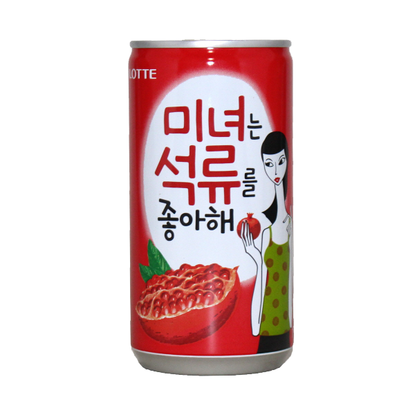

탄산 없이 쉽게 마실 수 있는 과실음료
탄산이 들어있지 않아 쉽게 마실 수 있고
석류과즙이 함유되어 있어 상큼달달한 맛을 느낄 수 있는 음료입니다.
대한민국 대표 종합음료기업에서 글로벌 종합음료기업으로 성장한
롯데칠성음료가 제작한 음료로, 롯데만의 음료 맛을 유지하기 위해
석류청징농축액에 석류과즙을 1% 함유하여 제작 하고 있습니다.

잘 익은 석류를 수확하여 새콤달콤 상쾌한 맛이 나는
과육을 분리 한 후 추출하여 음료에 함유합니다.
석류에는 비타민이 풍부한데 특히 비타민C와 비타민K가
풍부하며 무기질도 풍부해서 미용에도 좋고 혈관건강에도
도움됩니다. 또한 관절염 완화에도 도움이 됩니다.
이란산 '페르시아 석류과즙' 20%와 식이섬유가 함유되어
석류의 깔끔하고 담백한 맛을 느낄 수 있는
'미녀는 석류를 좋아해 (175 ml)가 리뉴얼 된 제품으로,
5~6월에 붉은색의 아름다운 꽃이 피고 난 다음 열리는 탐스러운 열매들을 수확합니다.
석류 음료의 제작 과정
길고 긴 노력으로 얻은 구분 방법으로
가장 잘 익은 석류만 수확하는 농부들
새콤달콤한 석류 과즙을 착즙하여
음료에 들어가는 1%